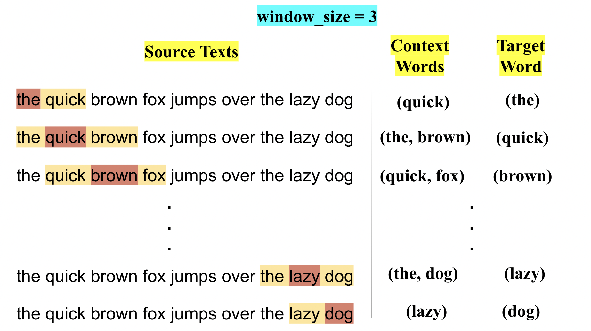
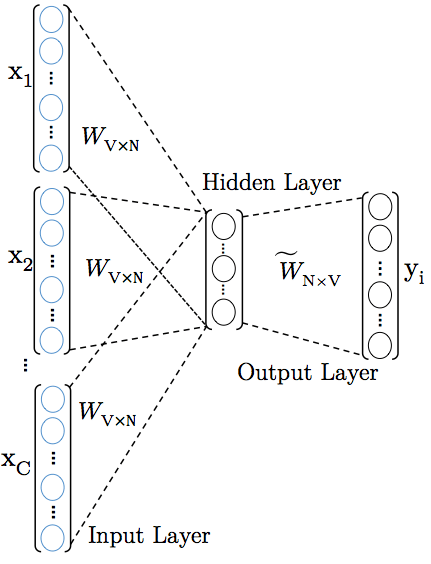
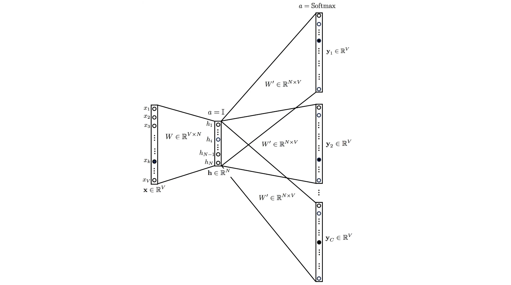
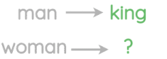
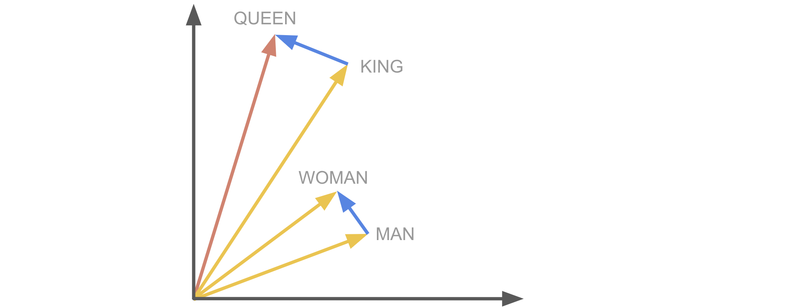
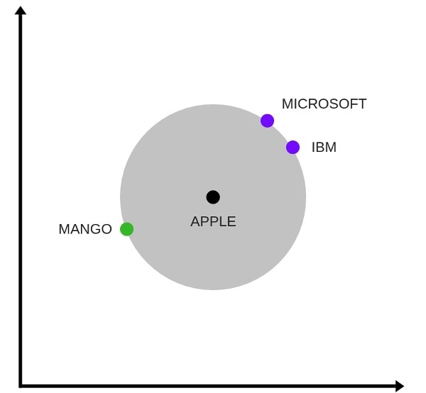

4.2.1. Word2Vec
Contents
4.2.1. Word2Vec#
Word2Vec is a prediction-based method for forming word embeddings. It is a shallow two-layered neural network that is able to predict semantics and similarities between the words.
The main idea is to use a classifier to predict which words appear in the
context of (i.e. near) a target word (or vice versa). Words that appear in similar contexts will have very similar vector representations.
Variants of Word2Vec: Word2Vec is a combination of two different models – CBOW (Continuous Bag of Words) and Skip-gram.
Defining Corpus#
For illustration purpose, let’s assume that the entire corpus is composed of the English pangram (a sentence that contains all the letters of the alphabet)
the quick brown fox jumps over the lazy dog
To make it simple I have chosen a sentence without capitalization and punctuation. There are \(9\) words \((T=9)\), and \(8\) as vocabulary \(V\) (set of unique words) size \((|V|=8)\).
Note
Note that in real life, the corpus is much bigger than just one sentence.
CBOW (Continuous Bag of Words)#
In this method, given the surrounding context words based on a given window_size, we predict the target word. That means we will be predicting next word for a given word (or sequence of words).
Construct the Training examples
Now let’s construct our training examples, scanning through the text with a window (window_size=3) will prepare a context word and a target word, as follows:

For example, for context word "the" and "brown" the target word will be "quick".
Now these multiple context words need to be converted into one word/vector so that we can feed these into neural network model. To do this we will just take mean of those multiple context words (one-hot-encoded vector).

After the model is trained and the weights are updated, each column of the weights for the output matrix are the required word embeddings corresponding to each word in the vocabulary \(V\).
That is the word embeddings are \(N\)-dimensional and this \(N\) is nothing but the number of neurons in the hidden layer!
Skip Gram#
In this model, we use the target word (whose vector representation we want to generate) to predict the context (generated based on a given window_size) and in the process, we produce the representations.
It is the complete opposite of the CBOW model.

We input the target word into the network. The model outputs \(C\) probability distributions. What does this mean?
For each context position, we get \(C\) probability distributions of \(V\) probabilities, one for each word where the above model takes \(C\) context words into the picture.
In both the cases, the network uses back-propagation to learn. Detailed math can be found here.
Analogy#
These embeddings capture relational meaning! The classical example of neural word embeddings:

vector(king) - vector(man) + vector(woman) ~ vector(queen)

The similar direction of the blue arrows indicates similar relational meaning.
Word2Vec model from python genism library#
Gensim is a Python library for topic modelling, document indexing and similarity retrieval with large corpora. Target audience is the natural language processing (NLP) and information retrieval (IR) community.
Let us use pre-trained Word2Vec model from genism library in order to print the most similar words to New York from vocabulary of pretrained models.
Install the latest version of gensim#
!pip install gensim
Import essential libraries#
Note: The trained word vectors are stored in a
KeyedVectorsinstance, as model.wv
import gensim
import gensim.downloader as api
from gensim.models.keyedvectors import KeyedVectors
Load pretrained model#
Use gensim to load a word2vec model pretrained on google news and perform some simple actions with the word vectors (\(300\) represents the dimension of the word vectors).
model = api.load("word2vec-google-news-300")
[==================================================] 100.0% 1662.8/1662.8MB downloaded
Save the Word2Vec model#
model.save_word2vec_format('word2vec.bin', binary=True)
Load the Word2Vec model#
model = KeyedVectors.load_word2vec_format('word2vec.bin', binary=True)
Printing the most similar words to New York from vocabulary of pretrained model#
model.most_similar('New_York')
[('NewYork', 0.7444177865982056),
('Manhattan', 0.6598774194717407),
('theNew_York', 0.6500560641288757),
('NY', 0.6273693442344666),
('Brooklyn', 0.6272951364517212),
('Long_Island', 0.626175582408905),
('NYC', 0.6110411286354065),
('inNew_York', 0.608241617679596),
('upstate', 0.604249119758606),
('RBI_ARodriguez', 0.6038434505462646)]
Cosine similarity between king - man + woman and queen#
from sklearn.metrics.pairwise import cosine_similarity
lhs = (model['king'] - model['man'] + model['woman']).reshape(1,-1)
rhs = model['queen'].reshape(1,-1)
print("Cosine Similarity between 'king - man + woman' and 'queen' =", cosine_similarity(lhs, rhs)[0,0])
Cosine Similarity between 'king - man + woman' and 'queen' = 0.7300518
We have a very high similarity score (as expected)!
Below is one interesting visualisation of word2vec

The above image is a t-SNE representation of word vectors in 2 dimension and you can see that two contexts of apple have been captured. One is a fruit and the other company.
The above explanation is a very basic one just to make you familiar with how Word2vec works. But there’s a lot more to it. For example, to make the algorithm computationally more efficient, methods like Hierarchical Softmax and Skip-Gram Negative Sampling are used. You can read about them in these beautiful posts (1 and 2, links to an external site).